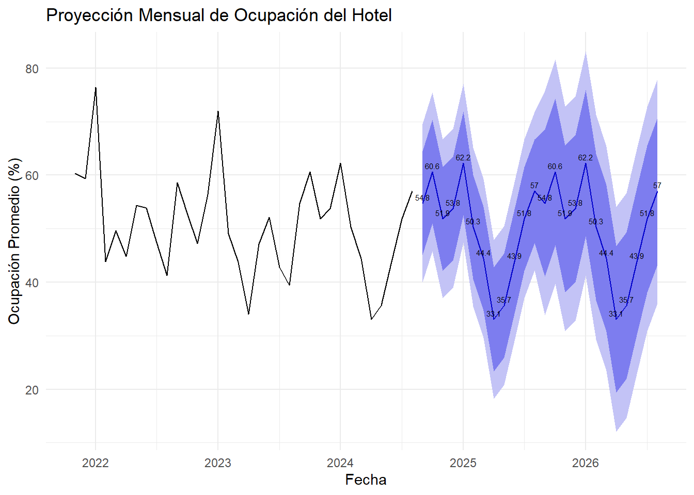

En primer lugar, se obtendrá la información desde un archivo pdf, sobre la ocupación historica del hotel y se verifica que contenga los campos por utilizar.
Ahora se transforma la informacion en un dataframe y se filtran las columnas a utilizar, a través de la función select de la bilbioteca dplyr, con la siguiente descripción:
CONSIDERED_DATE = Fecha.
NO_ROOMS = Cantidad de habitaciones ocupadas.
CF_OCCUPANCY = % de ocupación sobre las habitaciones disponibles.
REAL_OCCUPANCY = % de ocupación sobre el total de habitaciones del hotel.
REVENUE = Total ingresos en pesos del día CF_AVERAGE_ROOM_RATE = Valor promedio de la habitación del día.
Ahora se agrupa el criterio, ya que no resulto transformar la columna CHAR_CONSIDERED_DATE en formato fecha, se agrupará por el formato de la columna CONSIDERE_DATE, elimando los primeros 3 caracteres, obteniendo un string de formado MMM-AA, puediendo agrupar los items por mes y año.
Se aplica un modelo de prediccion basaro en la temporalidad, ya que la industria hotelera tiene mejores ventas en periodos de vacaiones, ya que en gran parte la demanda es nacional o de paises limitrofes.
El modelo ARIMA: AR: Componente de autorregresión temporal, donde relaciona las observaciones pasadas con las presentes. \[
Y_t = \phi_1 Y_{t-1} + \phi_2 Y_{t-2} + \ldots + \phi_p Y_{t-p} + \varepsilon_t
\] I:Componente de diferenciación entre el periodo actual y el anterior. \[
\Delta Y_t = Y_t - Y_{t-1}
\] MA:Componente de media movíl, que capta los errores pasados en el valor actual de la serie temporal. \[
Y_t = \mu + \theta_1 \varepsilon_{t-1} + \theta_2 \varepsilon_{t-2} + \ldots + \theta_q \varepsilon_{t-q} + \varepsilon_t
\] Estos 3 componentes unidos, dan la posibilidad de proyectar valores según una serie de tiempo.
En este apartado se toma la serie temporal, clasificando la temporalidad en meses y se proyecta la ocupación % para 2 años, cabe destacar que 67 es el total de habitaciones disponibles.
#Convertir la columna 'CONSIDERED_DATE' a tipo Dateocupacion$CONSIDERED_DATE <-as.Date(ocupacion$CONSIDERED_DATE)#Agrupar datos diarios por mesocupacion_mensual <- ocupacion %>%group_by(Fecha =floor_date(CONSIDERED_DATE, "month")) %>%summarize(prom_ocupacion =mean(CF_OCCUPANCY, na.rm =TRUE), .groups ='drop')#Crear un objeto de serie temporal con los datos de ocupación mensualts_ocupacion_mensual <-ts(ocupacion_mensual$prom_ocupacion, frequency =12, start =c(2021, 11))#Ajustar un modelo ARIMAmodelo_arima <-auto.arima(ts_ocupacion_mensual)#Hacer predicciones para los próximos 24 mesespredicciones <-forecast(modelo_arima, h =24)summary(predicciones)
Forecast method: ARIMA(0,0,0)(0,1,0)[12]
Model Information:
Series: ts_ocupacion_mensual
ARIMA(0,0,0)(0,1,0)[12]
sigma^2 = 57.22: log likelihood = -75.73
AIC=153.47 AICc=153.67 BIC=154.56
Error measures:
ME RMSE MAE MPE MAPE MASE ACF1
Training set -1.251842 6.084999 4.022761 -3.352323 8.432736 0.6501134 0.2465136
Forecasts:
Point Forecast Lo 80 Hi 80 Lo 95 Hi 95
Sep 2024 54.77835 45.08387 64.47283 39.95192 69.60479
Oct 2024 60.63485 50.94037 70.32933 45.80842 75.46128
Nov 2024 51.85195 42.15747 61.54644 37.02552 66.67839
Dec 2024 53.75355 44.05907 63.44804 38.92712 68.57999
Jan 2025 62.24026 52.54577 71.93474 47.41382 77.06669
Feb 2025 50.31805 40.62357 60.01254 35.49162 65.14449
Mar 2025 44.42254 34.72805 54.11702 29.59610 59.24897
Apr 2025 33.06654 23.37206 42.76103 18.24011 47.89298
May 2025 35.66387 25.96939 45.35836 20.83744 50.49031
Jun 2025 43.85893 34.16445 53.55342 29.03250 58.68537
Jul 2025 51.82753 42.13304 61.52201 37.00109 66.65396
Aug 2025 57.02057 47.32609 66.71506 42.19414 71.84701
Sep 2025 54.77835 41.06828 68.48842 33.81061 75.74610
Oct 2025 60.63485 46.92478 74.34492 39.66710 81.60259
Nov 2025 51.85195 38.14188 65.56203 30.88421 72.81970
Dec 2025 53.75355 40.04348 67.46363 32.78581 74.72130
Jan 2026 62.24026 48.53019 75.95033 41.27251 83.20800
Feb 2026 50.31805 36.60798 64.02812 29.35031 71.28580
Mar 2026 44.42254 30.71246 58.13261 23.45479 65.39028
Apr 2026 33.06654 19.35647 46.77661 12.09880 54.03429
May 2026 35.66387 21.95380 49.37394 14.69613 56.63162
Jun 2026 43.85893 30.14886 57.56900 22.89119 64.82668
Jul 2026 51.82753 38.11745 65.53760 30.85978 72.79527
Aug 2026 57.02057 43.31050 70.73065 36.05283 77.98832
Se grafica la proyección.
# Graficar las predicciones con etiquetasautoplot(predicciones) +geom_text(aes(x =time(predicciones$mean), y = predicciones$mean, label =round(predicciones$mean, 1)), vjust =-0.5, size =2) +# Ajusta el tamaño de la fuente y la posición verticallabs(title ="Proyección Mensual de Ocupación del Hotel", x ="Fecha", y ="Ocupación Promedio (%)") +theme_minimal()
Don't know how to automatically pick scale for object of type <ts>. Defaulting
to continuous.

##Despliege y Monitoreo
Se espera aplicar esta proyección en las aplicación en presupuestos y flujos de la compañia, como una base para las ventas futuras, acorde a la temporada del año, para poder ajustar las politicas de tarifa por temporada, así ser más atractivo en el mercado y sacar el mayor margen segun cada periodo.
Por el momento faltan controles para determinar la capacidad probabilistica del mismo, con más tiempo se aplicarán herramientas de Machine Learing supervisado, donde se contrastará el modelo con una muestra de practica y otra de testeo, en el modelo ARIME u otro que pueda dar respuesta al pronostico de la ocupación.
Para el monitoreo, se hara una contraste con la realidad, es decir con el dato pasado, si esta tiene una desviación significante, se buscará hacer el modelo más robusto con otros factores que puedan incidir en el hotel.
Además se solicitar los permisos para obtener los datos directos de la base de datos, para que estos puedan ser revisados en tiempo real, revisando la información diaria, agregando a la ecuacion el factor día, ya que los fin de semanas es donde mayor ocupación hay, sumado a la inclusion de Machine Learning, se podría desarrollar un modelo no supervisado y vaya actualizando las proyección, optimizando el mejor modelo.